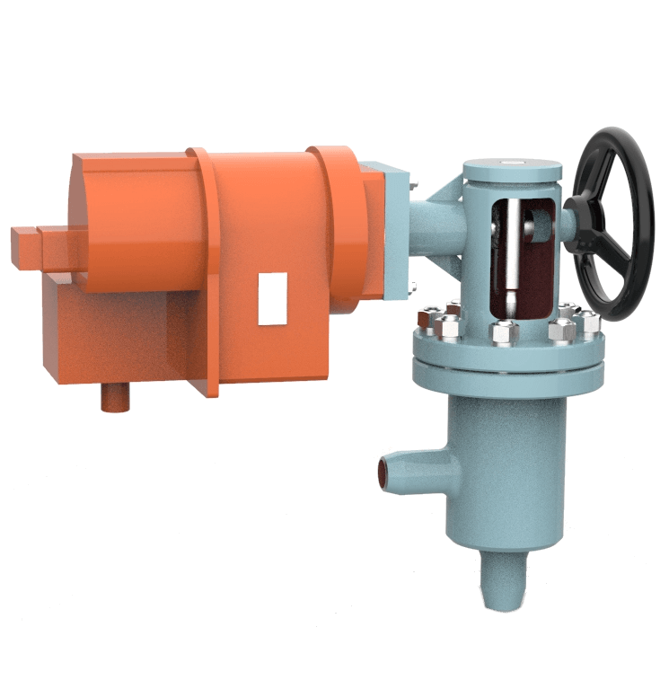
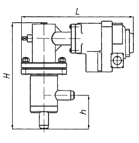

Топливная арматура: предохранительно-запорный клапан (ПЗК) мазутный
Отсекающий предохранительно-запорный паромазутный клапан со встроенным электромеханизмом изготовлен в соответствии с ТУ 3742-001-27201850-95 и служит для автоматического прекращения подачи жидкого топлива(мазута) в топку котла.
Клапан предпочтительно устанавливается на горизонтальном трубопроводе, однако, допускается вертикальная компоновка. ПЗК может управляться как автоматически и дистанционно с пульта управления для осуществления открытия (взвода) и закрытия (сброса) при помощи блока управления и защиты (БУП У или БУП М) электромеханизма (МБОВ), так и вручную - непосредственно с исполнительного механизма.
Технические характеристики мазутных предохранительно-запорных клапанов:
| 1. | Основная рабочая среда ГОСТ 10585 | жидкое топливо (мазут) |
| 2. | Тип присоединения | сварное |
| 3. | Класс герметичности по ГОСТ 9544 | А (первый) |
| 4. | Привод |
МБОВ-25/1-0,25
механизм взвода - планетарный редуктор механизм сброса - пружинный с электромагнитной защелкой |
| 5. | Управление | БУП У или БУП М |
| 6. | 6 Блок аварийной защиты | БАЗ-01М |
| 7. | Тип конструкции |
угловая, затвор - металл по металлу |
| 8. | Напряжение (частота) питания электромеханизма, В (Гц) |
эл. цепи механизма взвода - переменное, 220 (50)
эл. цепи механизма сброса - постоянное, 220 |
| 9. | Мах потребляемая мощность электромеханизма, Вт | 50 (20) |
| 10. | Номинальный противодействующий момент нагрузки, Нм | 25 |
| 11. | Наработка на отказ до капремонта, циклов, не менее | 500 |
| 12. | Степень защиты по ГОСТ 14254 для МБО | IP-65 |
| 13. | Механизм МБОВ имеет взрывобезопасный уровень взрывозащиты, вид взрывозащиты "взрывонепроницаемая оболочка", маркировку взрывозащиты 1ExdIIBT5, и может применяться во взрывоопасных зонах согласно ГОСТ Р 51330.9 и ГОСТ 51330.13 и другим нормативно-техническим документам, определяющим применимость электрооборудования во взрывоопасных зонах, где возможно образование взрывоопасных смесей категории IIА и IIВ групп Т1, Т2, Т3, Т4, Т5 согласно ГОСТ Р 51330.5. | |
| 14. | Время закрытия клапана, сек, не более | 1 |
| 15. | Время полного открытия клапана, сек. | 15+10% |
| 16. | Максимальная температура рабочей среды, °С (К) |
для топливного мазута- плюс 150 (423)
технологическая продувка паром (кратковременная) - плюс 250 (523) |
| 17. | Минимальная температура рабочей среды, °С (К) | плюс 50 (323) |
| 18. | Температура окружающей среда ГОСТ 15150, °С (К) |
УХЛ2 (районы с умеренным и холодным климатом):
-плюс 40 (313) -минус 60 (213) Т2 (районы с тропическим климатом): -плюс 50 (323) -минус 10 (263) |
Технические данные мазутных предохранительно-запорных клапанов:
| Шифр изделия | Обозначение чертежа | Dу, мм | Ру , МПа (кгс/см2)
| *Масса, кг |
|
| ЭК-303М | ЭМИ 491120.001 | 25 | 6,3 (63) | 20,9 |
| ЭК-304М | ЭМИ 491120.002 | 20 | 20,7 | |
| ЭК-302М | ЭМИ 491120.003 | 32 | 21,6 | |
| ЭК-301М | ЭМИ 491120.004 | 50 | 26 |
* Масса дана без учета массы привода
Габаритные и присоединительные размеры мазутных предохранительно-запорных клапанов:

| Обозначение | Dу, мм | Размеры, мм | *Масса, кг | **Электромеханизм | ||
| H | L | h | ||||
| ЭМИ 715312.002 (ЭК-304М) | 20 | 410 | 467 | 132 | 20,7 | МБОВ-25/1-0,25 |
| ЭМИ 715312.001 (ЭК-303М) | 25 | 20,9 | ||||
| ЭМИ 715312.003 (ЭК-302М) | 32 | 21,6 | ||||
| ЭМИ 715312.004 (ЭК-301М) | 50 | 456 | 461 | 164 | 26 | |
* Масса без учета массы привода.
** Возможна установка другого электромеханизма